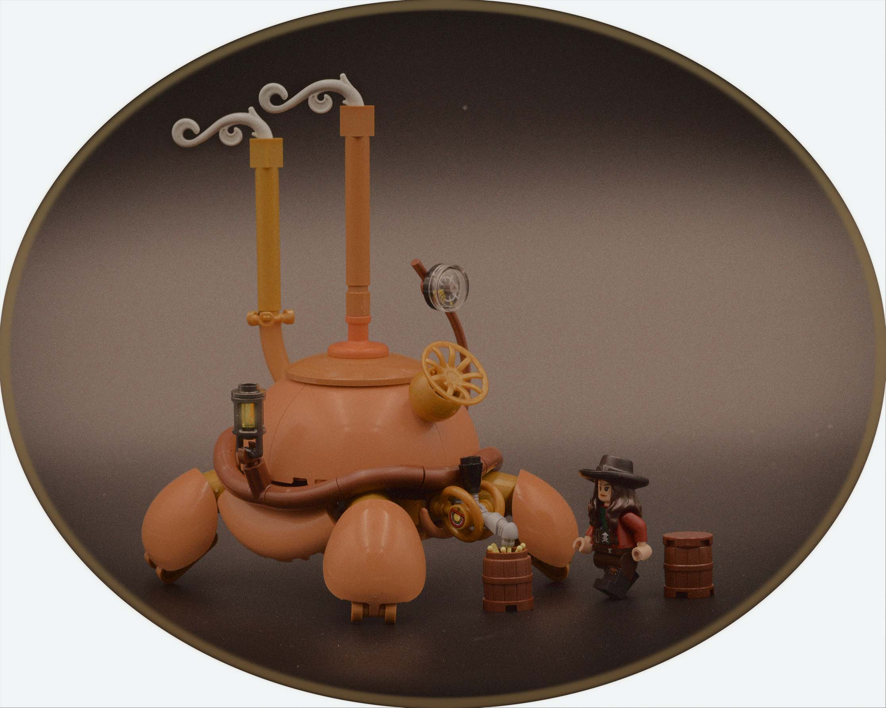
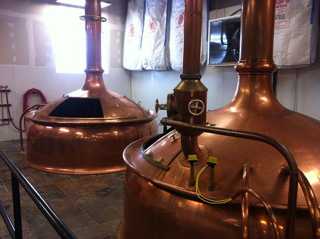
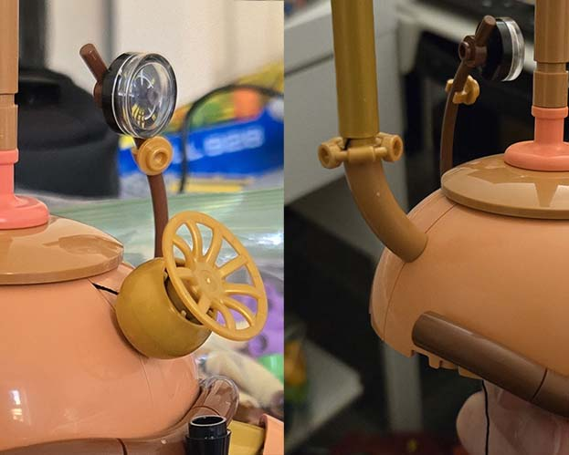
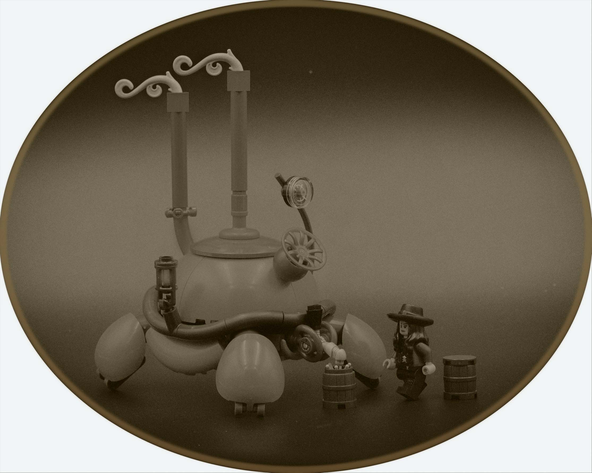
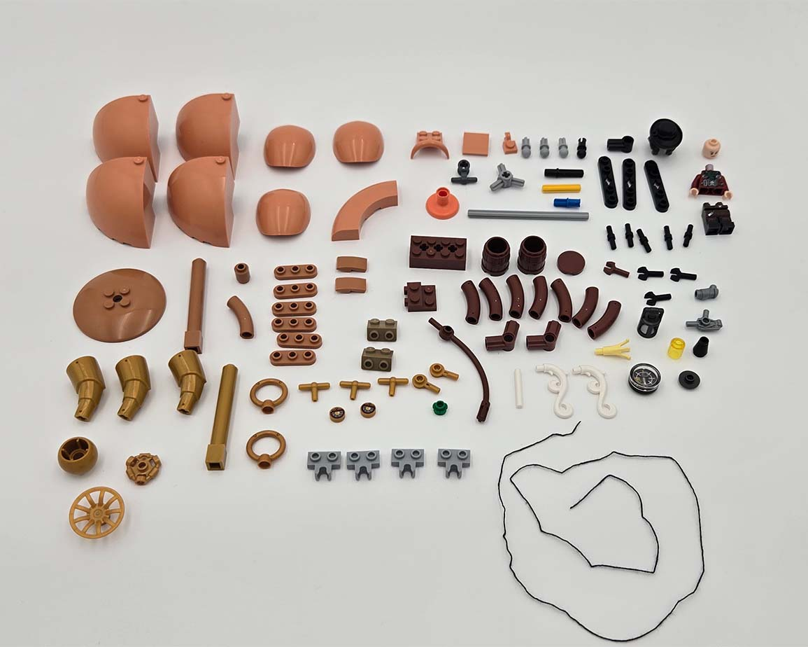

mobile brewery

This week was a tricky one. The theme this week was "draft", and while there are multiple interpretations for it, I found myself struggling early on to think of an interesting take. Let me say this, I'm not a beer person. I do not like the taste. That being said, beer kettles are pretty cool, especially those giant, antique, copper kettles. So, for this week, I decided to interpret "draft" as in reference to a draft beer, which is related to those awesome copper brewing kettles.

A brewing kettle... creature?
I think much of the difficulty this week was not only finding an interesting take on the theme but also trying to weave in a character/creature build to fit the theme. Of course, the latter portion is unnecessary in this contest, but I enjoy making characters/creatures such that it felt boring to just build a simple kettle. With the 101 part restriction, it really limits the complexity of creatures to choose from, so like last year's Hard Shelled Hen, I've gone with another shelled creature.
Brewing Shenanigans
I started with the kettle/shell. The dome pieces from the mini orchids set made for the perfect kettle shape and color. However, in a lot of kettle designs, there are tubes, valves, and gages connected to the rounded dome - something that would seem impossible to do here with LEGO. So how is that gold wheel and back macaroni pipe connected? String.

Yep, this is definitely one of the LEGO connections.
After figuring out that silly connection, I added a few more details to the kettle. The gage is an old compass piece that actually works! Lastly, though this is not something seen in the reference material, I added a little lantern to the side of the kettle. At this point, I started to lean into the steampunk aesthetic, and I felt adding this detail in would help bring the model more into this universe. Of course, I still needed to design the head, and this is where I would further try to tie in the beer theming along with the steampunk aesthetic.
The head design takes inspiration from beer taps. The nozzle/mouth uses a mechanical minifig arm. To add in the steampunk influence, I echoed the design language of the gold valve on the kettle by including gold Sonic rings surrounding the eye tiles, which are from Monkie Kid.
Final Composition
I was afraid that with only the kettle creature, the theme still might not be totally clear. To mitigate this fear, I allocated some parts to a minifig and two beer barrels. Hopefully, these last few additions helped sell and made the theme crystal clear when you saw the main image.
Speaking of the main image, what's up with the round crop? I have been playing around with edits for the last few entries, and when taking pictures, I thought it'd be neat to take the photo with a round crop edit in mind. I positioned the minifig to look away from the camera such that the picture was more of a candid shot of everyday life. Also, the steampunk vibe lends itself to Victorian era photography, which sometimes featured rounded frames. Is it strange? Maybe, but I think it looks neat!
Anyway, we've now reached the halfway point of Rogue Olympics 2026! Only 4 more weeks left of funny, 101-piece mocs.


final part count: 101/101